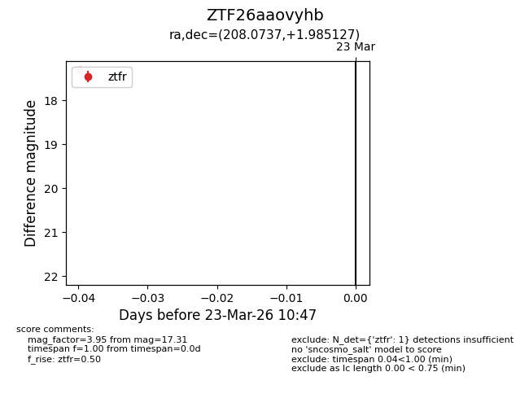
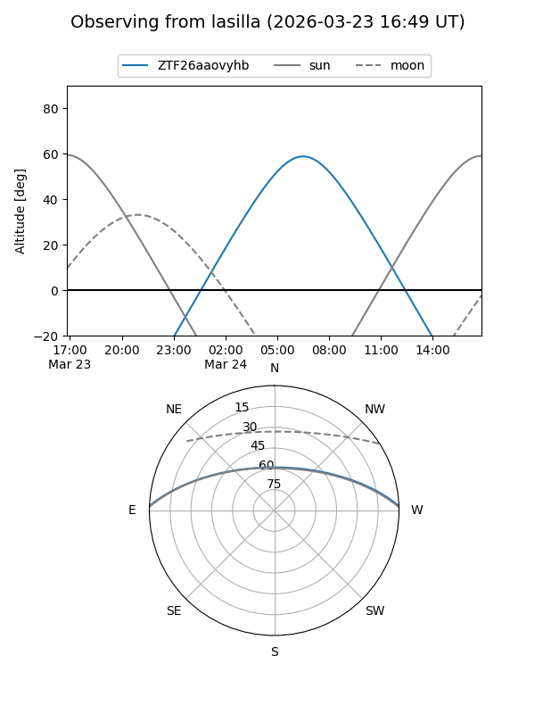
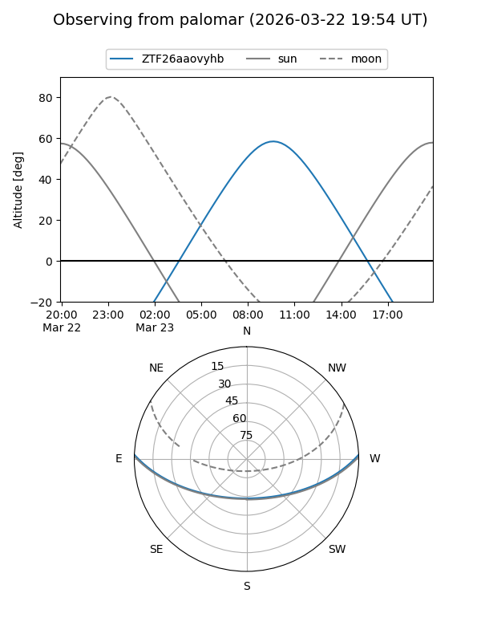

ZTF26aaovyhb
Target ZTF26aaovyhb at 2026-03-23 10:49
Aliases and brokers:
FINK: link
Lasair: link
ALeRCE: link
alt names
ZTF26aaovyhb (ztf,fink_ztf)
Coordinates:
equatorial (ra, dec) = 208.0737,+1.98513
equatorial (HMS+DMS) = 13:52:17.68,+01:59:06.46
galactic (l, b) = (335.6077,+60.93572)
Flags:
Photometry:
last ztfr=17.31
1 ztfr detections
Lightcurve

Visibility


Additional plots